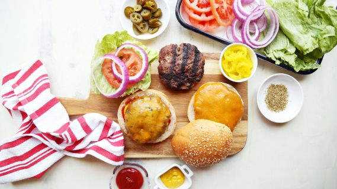

Good Ole' Burgers
Home

Description
“Here are the ingredients and the instructions to make the perfect burger! Although it may not be the healthiest, use medium ground beef for moistness and flavour. The leaner varieties produce burgers that are drier with a denser, tighter texture. Don't use previously frozen meat as juices are lost during defrosting. If making ahead, cover with plastic wrap and refrigerate for no more than a day. Enjoy!”
Ingredients
Burger
- 1 egg
- 1 teaspoon mustard (regular or Dijon)
- 1 teaspoon Worcestershire sauce
- 1 small onion, finely grated
- 1 clove garlic, minced
- 1/2 teaspoon salt
- 1/2 teaspoon pepper
- 1 lb medium ground beef
Seasoning
- 1 tablespoon creamy caesar salad dressing or 1 tablespoon Greek salad dressing
- 1 tablespoon chopped sun-dried tomato
- 1 tablespoon sour cream or 1 tablespoon yoghurt
- 1 tablespoon grated fresh lemon rind or 1 tablespoon lime rind
- 1 tablespoon ketchup or 1 tablespoon barbecue sauce
- 1 teaspoon lemon pepper
- 1 teaspoon curry powder
- 1 teaspoon dried thyme or 1 teaspoon dried rosemary
- 1 tablespoon fresh herb
- 2 teaspoons cajun seasoning
- 1 teaspoon sesame oil
- 1 teaspoon teriyaki sauce or 1 teaspoon hoisin sauce
- 1 fresh jalapenos or 1 pickled jalapeno pepper, chopped
Steps
- Lightly oil grill and heat BBQ to medium.
- Whisk egg in a bowl and add next 6 ingredients.
- Add any of the seasonings that appeal to you.
- Crumble in beef and using your hands or a fork, gently mix together.
- Handle the meat as little as possible – the more you work it, the tougher it gets.
- Gently shape (don’t firmly press) mixture into burgers about ¾ inch thick.
- Using your thumb, make a shallow depression in the centre of each burger to prevent puffing up during cooking.
- Place burgers on the grill, close lid and BBQ until NO LONGER PINK INSIDE, turning once, about 6 – 8 minutes per side.
- An instant read thermometer should read 160F.
- Don't abuse your burgers by pressing with a spatula, pricking with a fork or turning frequently as precious juices will be lost!
- Tuck into a warm crusty bun& add your favourite toppings.
Reference
Burger Recipe